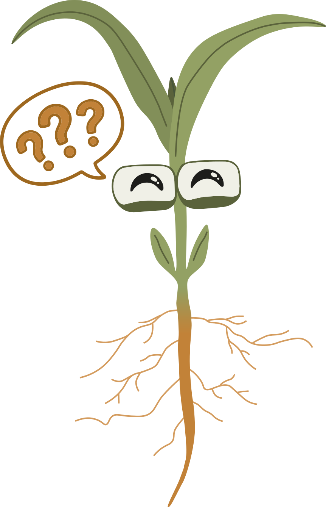

Vul je gegevens in en beantwoord de vraag hieronder.
What do you think?
The posters in this exhibition present ongoing research on plant biology and environmental adaptation. Each project reflects a different perspective on how plants respond to changing conditions.
We invite you to respond with your own interpretation, reflection, or question. Your input helps create a shared space for discussion between science and public experience.

By submitting your email address, you agree to receive a one-time reminder about the closing event.
Your name, email, and response will only be used for this purpose. Answers may be shared anonymously during the event.
No data will be used for any other purpose and will not be stored beyond the scope of this project.